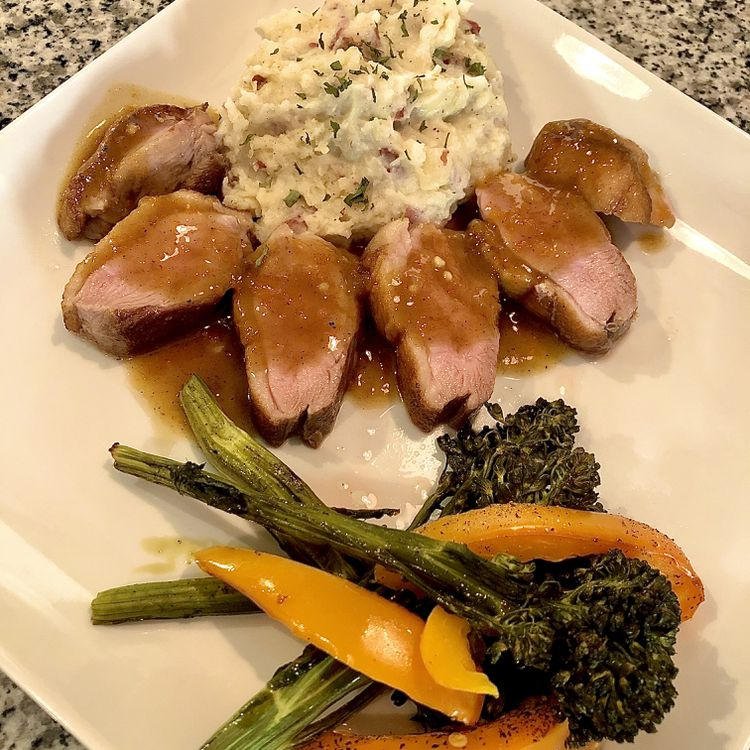

Duck a l'Orange

Description
Duck a l'orange is one of those classic dishes that somehow became a cliché, and people stopped making it for fear of looking un-cool, which is too bad, since it's really good.
This is traditionally done with a whole roasted duck, but by using duck breasts we get pretty much the same results in a lot less time.
Ingredients
- 2 duck breast halves
- salt to taste
- 1 cup chicken broth
- 2 tablespoons orange liqueur (such as Grand Marnier)
- 1 tablespoon sherry vinegar
- 1 tablespoon Seville orange marmalade, or more to taste
- 2 teaspoons grated orange zest
- 1 pinch cayenne pepper
- 1 tablespoon reserved duck fat
- 1 teaspoon all-purpose flour
- 1 tablespoon butter
Steps
- Score duck skin almost all the way through the skin and fat each way on the diagonal in a crosshatch pattern. Generously season with salt and rub salt into each breast. Let rest, skin-side up, at room temperature, for 15 minutes.
- Whisk chicken broth, orange liqueur, sherry vinegar, orange marmalade, orange zest, and cayenne pepper together in a small bowl.
- Pat duck breasts dry with paper towels. Re-season skin-side of duck breasts with salt.
- Heat duck fat in a heavy skillet over medium heat for 2 minutes. Place duck in skillet, skin-side down, and cook for 6 minutes. Flip duck breasts and cook until they start to firm and are reddish-pink and juicy in the center, about 4 minutes more. An instant-read thermometer inserted into the center should read 140 degrees F (60 degrees C). Transfer breasts to a plate to rest. Pour any rendered duck fat into a glass jar.
- Return skillet to medium heat and whisk flour into pan; cook and stir until flour is completely incorporated, about 1 minute. Pour orange mixture into skillet; bring to a boil. Cook until sauce thickens and is reduced, 3 to 5 minutes. Reduce heat to low. When orange mixture stops bubbling, add butter; stir until butter is completely melted and incorporated into the sauce, about 1 minute. Season with salt to taste.
- Slice duck breasts across the grain, arrange on a plate, and spoon orange sauce over the top.
Chef's Note
You can substitute vegetable oil for the duck fat.